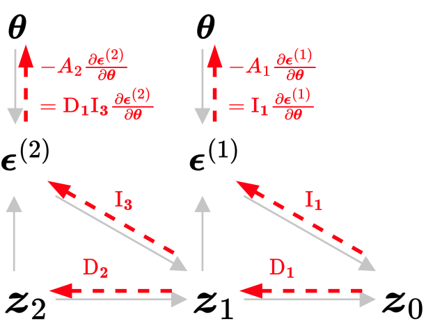
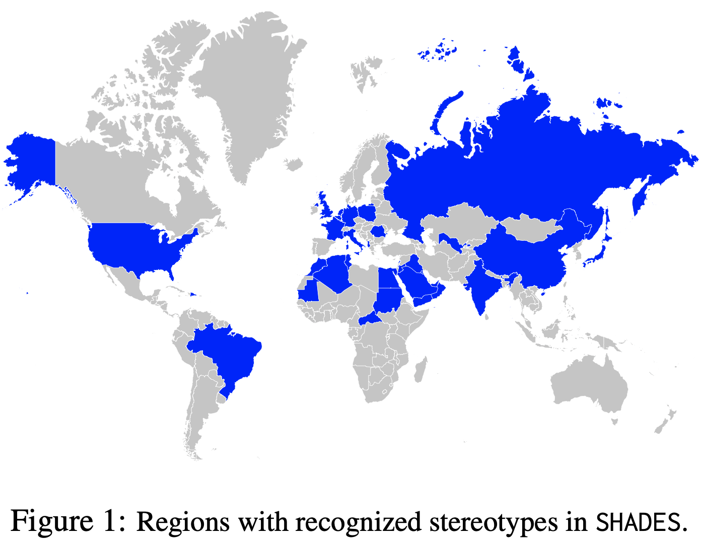
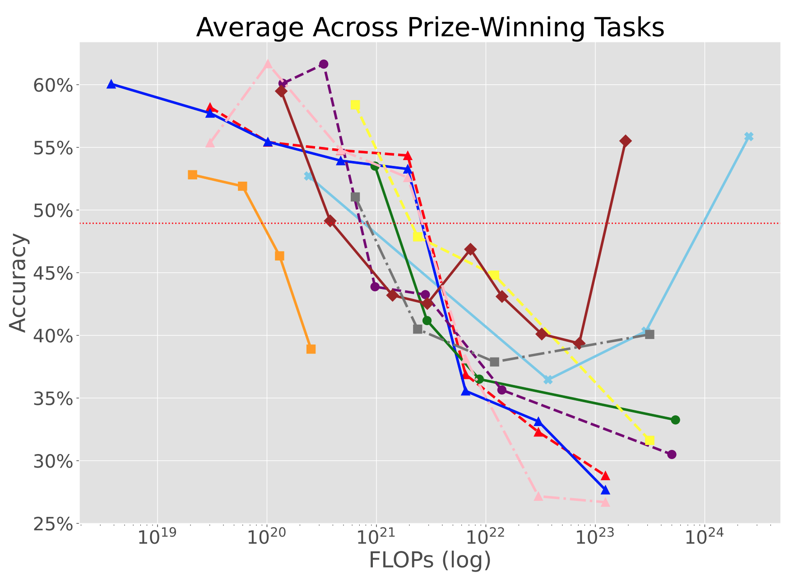
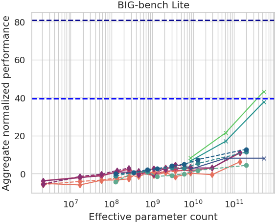
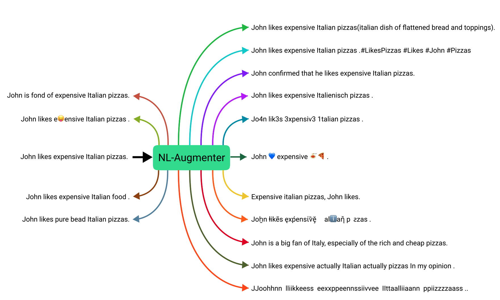
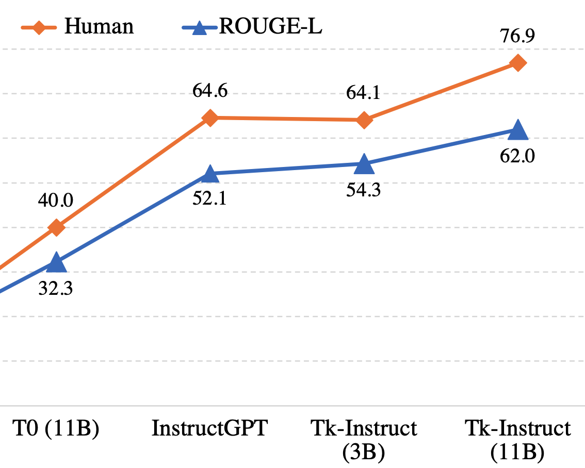
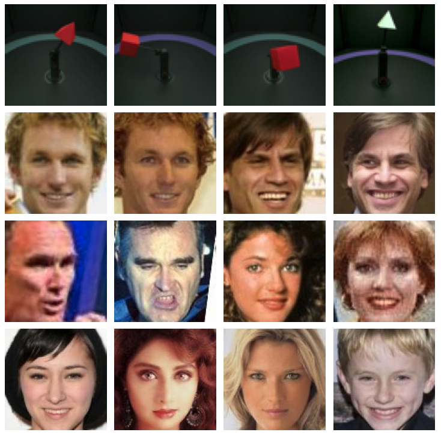
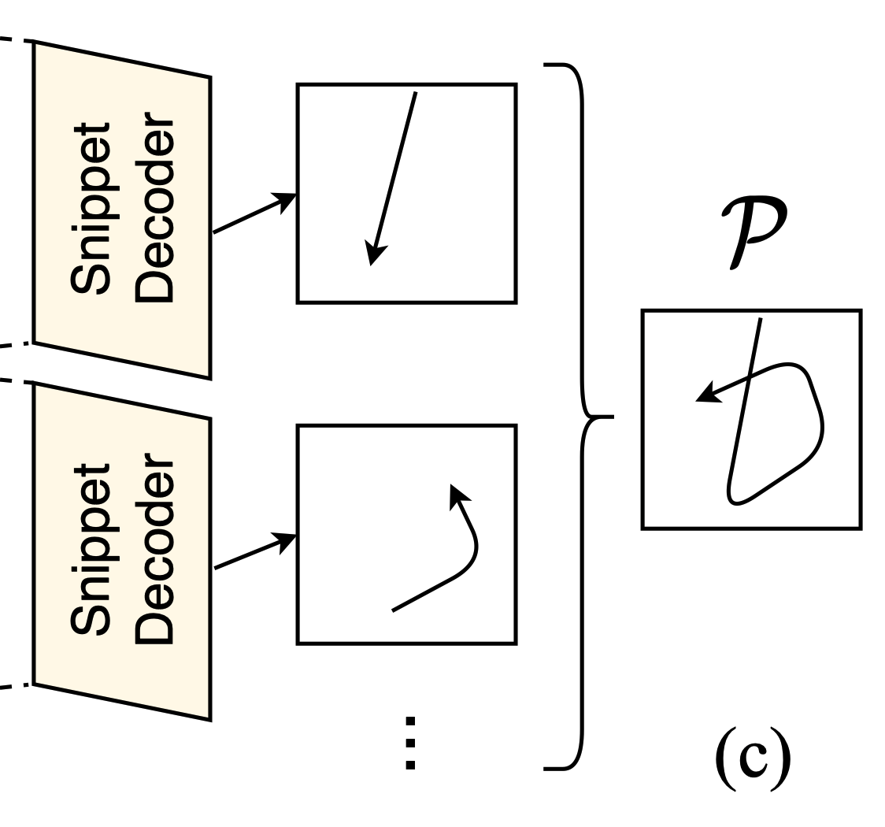
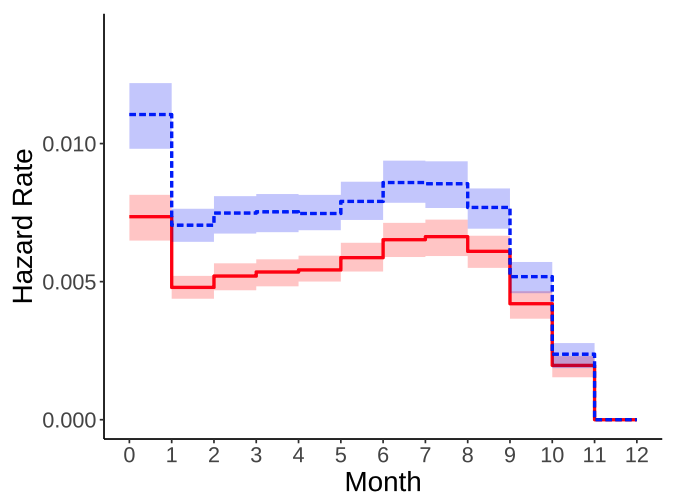

|
Xudong Shen I obtained my Ph.D. in AI from National University of Singapore in 2024, where I was advised by Prof. Mohan Kankanhalli. I earned my bachelor's degree from Zhejiang University, China, in 2019. During 2022–2023, I interned at Sea AI Lab in Singapore, working with Chao Du and Tianyu Pang. In 2024–2025, I co-founded a venture-backed AI startup. I am passionate about scaling Reinforcement Learning for multi-modal, long-horizon, complex real-world tasks. My earlier work focused on AI fairness, robustness, safety, and governance, where I took an evaluation-driven approach: stress-testing AI systems and developing model improvements. |
{kind=link}
Research |
|  |
Finetuning Text-to-Image Diffusion Models for Fairness
Xudong Shen, Chao Du, Tianyu Pang, Min Lin, Yongkang Wong, Mohan Kankanhalli ICLR, 2024 (Oral Presentation) Github / arXiv We developed a method to optimize diffusion models for any differentiable objective defined on the generated data, where score/noise prediction and RL fail. We applied it to enhance & control output diversity in text-to-image generation. |
|
MSTS: A Multimodal Safety Test Suite for Vision-Language Models
Paul Röttger, ..., Xudong Shen, ... (22 authors) arXiv, 2025 Github / arXiv Image+text prompts trigger more safety failures than text-only. |
|
|  |
SHADES: Towards a Multilingual Assessment of Stereotypes in Large Language Models
Margaret Mitchell, ..., Xudong Shen, ... (55 authors) NAACL, 2025 paper Probes multilingual stereotypes and its cross-lingual transfer in LLMs. |
|  |
Inverse Scaling: When Bigger Isn't Better
Ian McKenzie, ..., Xudong Shen, ... (26 authors) TMLR, 2023 Github / arXiv Shows when larger models consistently perform worse; analyzes failure modes. |
|  |
Beyond the Imitation Game: Quantifying and Extrapolating the Capabilities of Language Models
Aarohi Srivastava, ..., Xudong Shen, ... (450 authors) TMLR, 2023 Github / arXiv Large-scale eval that reveals where LLM capabilities scale well & where they don't. |
|  |
NL-Augmenter: A Framework for Task-Sensitive Natural Language Augmentation
Kaustubh D Dhole, ..., Xudong Shen,... (125 authors) NEJLT, 2023 Github / arXiv Stress-tested LLM robustness using 100+ natural-language augmentations. |
|  |
Benchmarking Generalization via In-Context Instructions on 1,600+ Language Tasks
Yizhong Wang, ..., Xudong Shen, ... (40 authors) EMNLP, 2022 arXiv Instruction-tuning on 1.6K tasks boosts zero-shot unseen-task performance. |
|  |
Fair Representation: Guaranteeing Approximate Multiple Group Fairness for Unknown Tasks
Xudong Shen, Yongkang Wong, Mohan Kankanhalli IEEE TPAMI, 2023 Github / arXiv Learns representations with multiple approximate robustness guarantees that transfer to even unseen tasks. We applied it to debias face representations. |
|  |
Unsupervised Motion Representation Learning with Capsule Autoencoders
Ziwei Xu, Xudong Shen, Yongkang Wong, Mohan Kankanhalli NeurIPS, 2021 Github / arXiv Learns representations with built-in interpretability (i.e., part–whole relationships) via capsule networks. |
|  |
Gender Animus Can Still Exist Under Favorable Disparate Impact: a Cautionary Tale from Online P2P Lending
Xudong Shen, Tianhui Tan, Tuan Q. Phan, Jussi Keppo FAccT, 2023 paper Time-to-event modeling to predict default & profitability on million-scale lending data. |

|
Directions of Technical Innovation for Regulatable AI Systems
Xudong Shen, Hannah Brown, Jiashu Tao, Martin Strobel, Yao Tong, Akshay Narayan, Harold Soh, Finale Doshi-Velez Communications of the ACM, 2024 paper Maps technical mechanisms that make AI easier to regulate in practice. |
|
Integration of Generative AI in the Digital Markets Act: Contestability and Fairness from a Cross-Disciplinary Perspective
Ayse Gizem Yasar, Andrew Chong, Evan Dong, Thomas Krendl Gilbert, Sarah Hladikovat, Roland Maio, Carlos Mougant, Xudong Shen, Shubham Singh, Ana-Andreea Stoicat, Savannah Thais LSE working papers series, 2024 paper Analyzes how Generative AI & foundation models interact with platform regulation. |
|
Feel free to steal this website's source code from Jon Barron. |